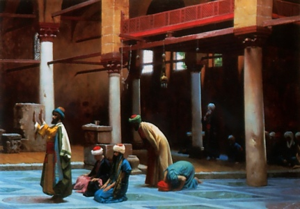

Sacred Texts Islam
Buy this Book at Amazon.com
|  | Arabic Thought and Its Place in Historyby De Lacy O'Leary[1922] |
The transmission of ancient Greek philosophy to the forerunners of the Renaissance was through the Islamic world. This book details each of the steps along that path, identifying the Syriac writers of the late classical period as introducing Hellenic philosophy into the Middle East. The book details the growth of Islam, including the major branches such as the Shia, Sunni, and Sufi, and many minor as well, and their relation to the schools of Islamic philosophy. From the Baghdad of the Arabian Nights, we pass to Islamic Spain, where Arabic philosophy was increased by both Muslim and Jewish scholars. Finally, we see how Plato and Aristotle were re-introduced into Europe through Christian scholars, and became one of the precursors of the Italian Renaissance. The equivalent of a college-level course on the history of Islamic thought, this book is essential background reading if you want to understand this topic.
NOTE: A short bibliography included in the Dover reprint was found to have not have been present in the 1922 edition. It is not included in this etext. Hence there is a page gap between the timeline and the index. In addition, the timeline is omitted from the text-only version for technical reasons. We will attempt to address this at some point.--J.B. Hare, Dec. 15, 2007